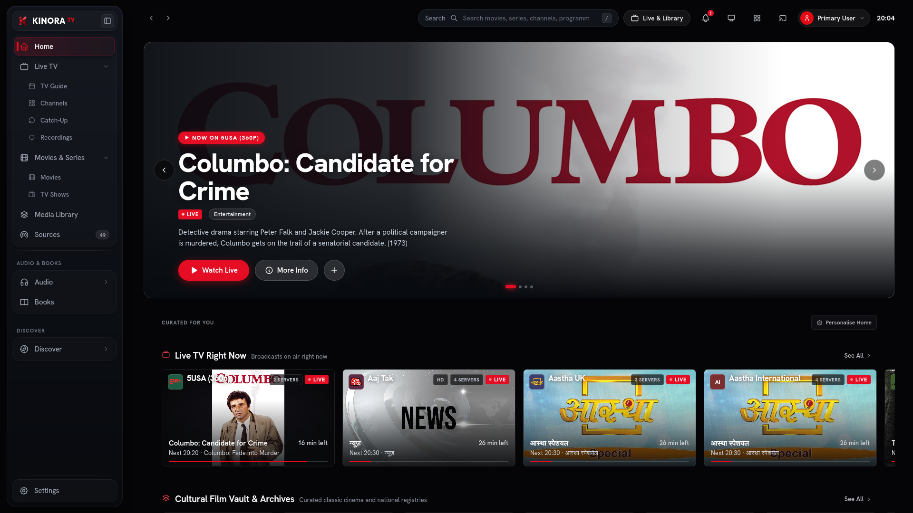
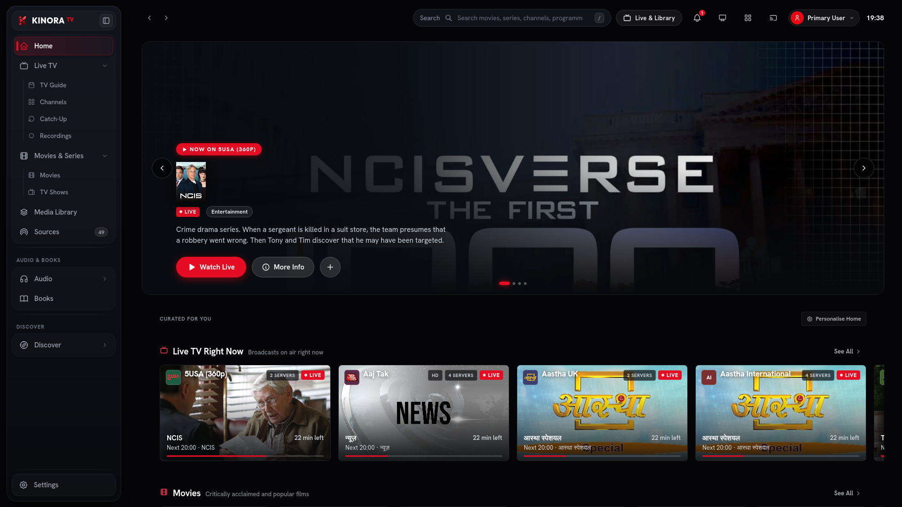

[01] Home Screen Desktop 1080p
Severity: High
Artwork
Data Mapping
Layout
Original (Failed Acceptance)
Rejected

Identified Visible Defects:
- Live TV rail card rendered as a solid black box because the broadcast channel lacked an M3U logo and had no ambient tone fallback.
- Movies and series rails were missing or stalled because refs.ts blocked OPEN_MOVIES when demoTitles was false without Xtream sources.
- Live on-air badge text had minor horizontal clipping and baseline alignment issues.
Corrected (Visual Acceptance Passed)
Verified

Verified Resolutions:
- Updated src/data/refs.ts to permit open movies and series resolution when Xtream sources are not present.
- Added open movies and series fallback to src/lib/homeFeed.ts to ensure populated Home rails.
- Implemented ambient channel mark with deterministic hue gradient in src/components/Tiles.tsx.
- Hero stage renders Columbo live card, crisp live badges, and fully populated Movies rail.
Root Cause:refs.ts resolve() returned null for open movie and series refs when demoTitles was false; ChannelCard had no ambient gradient fallback when logo was null; badge padding lacked baseline offset.